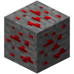
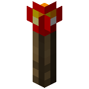
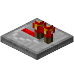
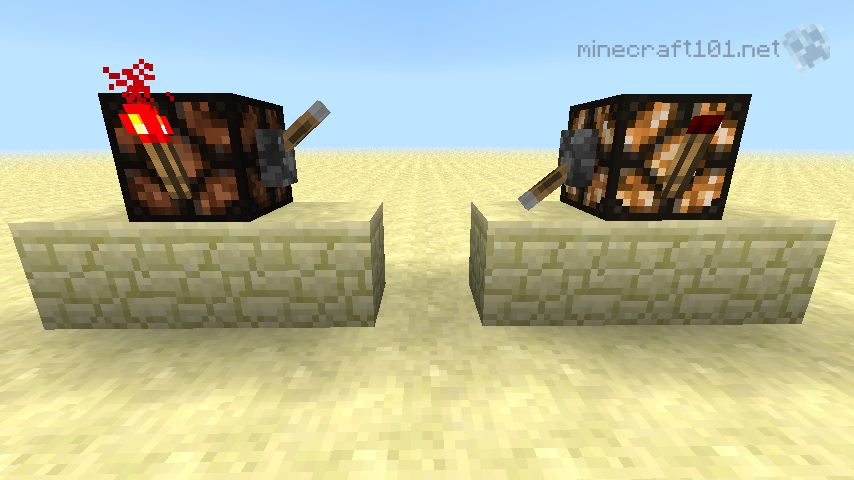
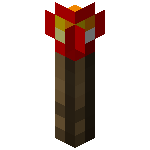
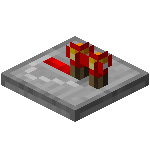
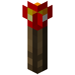
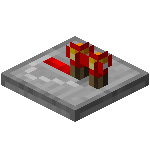

With redstone, there are four basic items involved, besides the blocks you have use. From left to right, they are: Redstone Ore, Redstone Dust, Redstone Torch, and Redstone Repeater. Redstone is the electricity of Minecraft, so any electricians reading this will understand better.



When you mine the redstone ore, you recieve 4 to 5 redstone dust. Redstone dust can be used as wiring, to power blocks. Using only redstone dust, you can create a signal that will travel up to 16 blocks long. It is not very much, but the next two items I am going to explain will help you with making longer signals. This Dust can be used to craft redstone torches, crafted like normal torches but using redstone instead of coal. You can also craft a redstone repeater with 3 stone(not cobblestone), 2 redstone torches, and one redstone dust.

Redstone torches can be used to invert signals, or power redstone dust. as seen in the image below, when a redstone torch recieves power, it turns off. Otherwise it sends power to blocks adjacent to it, or above it. Redstone torches can be used to invert signals, or power redstone dust. as seen in the image below, when a redstone torch recieves power, it turns off. Otherwise it sends power to blocks adjacent to it, or above it.
 


